In this comprehensive security project, I conducted hands-on reconnaissance and footprinting exercises to gather intelligence about target systems and networks. Footprinting—the systematic collection of information about a target network or system—is a critical first phase of security assessments. I practiced both passive techniques (reviewing publicly available information) and active methods (direct probing and social engineering techniques).
This foundational work demonstrates the reconnaissance phase that precedes any security engagement, illustrating how attackers or authorized penetration testers identify entry points and vulnerabilities before attempting exploitation.
I used Kali Linux for all command-line operations, leveraging built-in tools designed for network reconnaissance and security analysis. The environment required: - Kali Linux system with internet connectivity - Outbound TCP port 43 access (for WHOIS queries) - Terminal access to execute network diagnostics
I began by learning the hierarchical structure of domain registration through WHOIS lookups. My first step was to identify the authoritative registry for a specific top-level domain (TLD).
Initial WHOIS Query for TLD Authority: I executed a query targeting the .net TLD registry:
whois net -h whois.iana.org
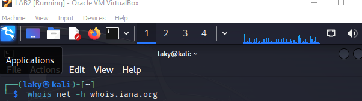
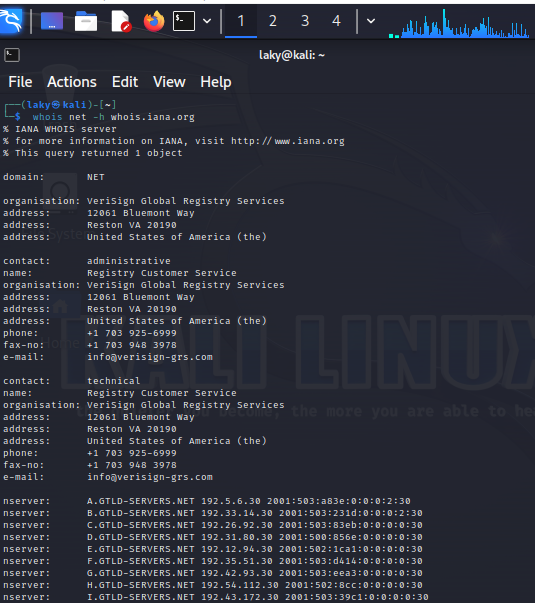
Finding: VeriSign Global Registry Services manages the .net TLD, with their authoritative WHOIS server at whois.verisign-grs.com.
Next, I located the specific registrar for the target domain (intermedia.net):
whois intermedia.net -h whois.verisign-grs.com
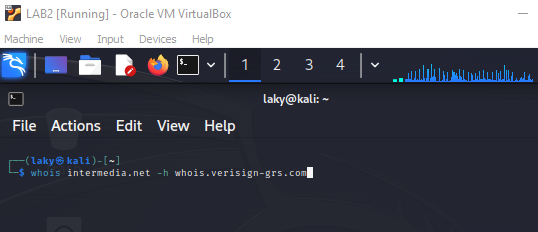
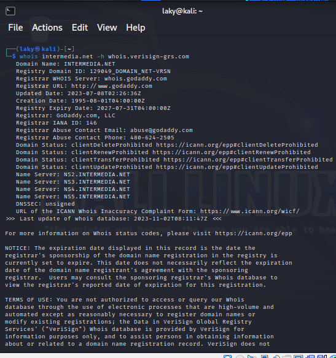
Findings: - Registrar: GoDaddy.com, LLC - Registrar WHOIS Server: whois.godaddy.com - Nameservers Identified: - NS2.INTERMEDIA.NET - NS3.INTERMEDIA.NET - NS4.INTERMEDIA.NET - NS5.INTERMEDIA.NET
Using the registrar's WHOIS server, I gathered detailed contact and address information:
whois intermedia.net -h whois.godaddy.com
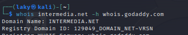
Organizational Information Gathered: - Address: 2155 E Warner Rd, Tempe, Arizona 85284, US - Phone: +1.480-624-2599 - Administrative & Technical Contacts: Accessible via GoDaddy's domain holder portal
I investigated the domain's DNS infrastructure using the dig command to enumerate nameservers:
dig ns zonetransfer.me
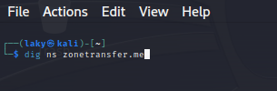
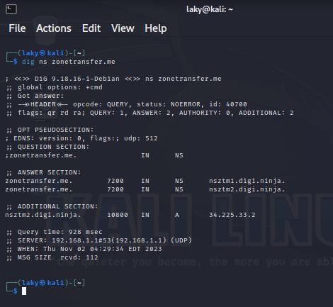
I attempted a full zone transfer (AXFR) from the domain's nameserver:
dig axfr zonetransfer.me @nsztm2.digi.ninja
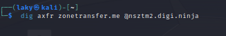
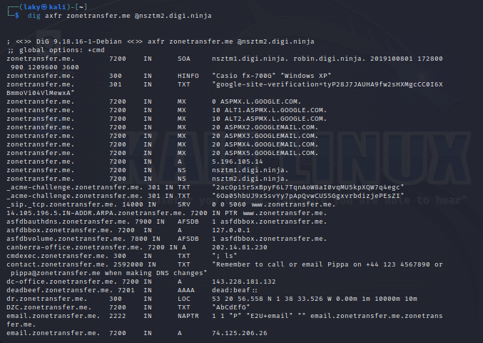
Key Finding: The DNS server was misconfigured to allow unrestricted zone transfers, exposing the entire forward zone file including all name-to-IP mappings, mail servers (MX records), and nameserver (NS records) information. This demonstrates a critical vulnerability that could provide attackers with a complete map of the target organization's network infrastructure.
I used traceroute to identify the network path from my system to the target:
traceroute www.intermedia.net
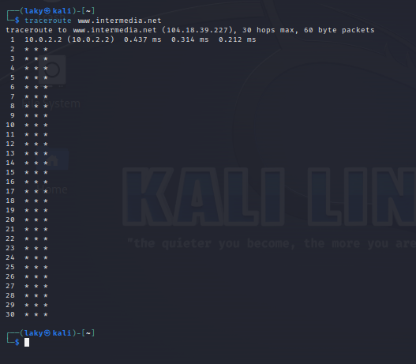
Analysis: This reconnaissance technique reveals intermediate routers and potential network entry points. The traceroute shows that most intermediate hops are filtered (showing * * *), indicating firewalls or routers configured to drop ICMP packets — a common defensive measure that limits network topology exposure.
I configured my Kali Linux system and executed network reconnaissance scans:
System Configuration:
ifconfig eth0
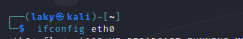
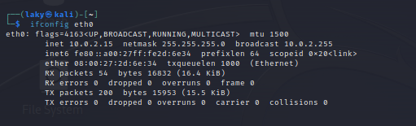
I performed a network-wide ping sweep to identify active hosts on the target network subnet:
nmap -sn 10.0.2.15/24
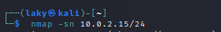
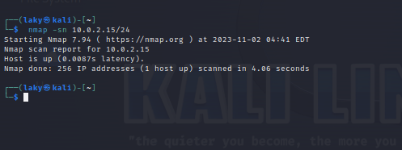
Technique Explanation:
- -sn flag performs ICMP ping sweep without port scanning
- 10.0.2.15/24 targets the entire /24 subnet (254 possible hosts)
- Results identify which hosts are actively responding to network probes
I researched industry-leading security frameworks through the SANS Institute's resources:
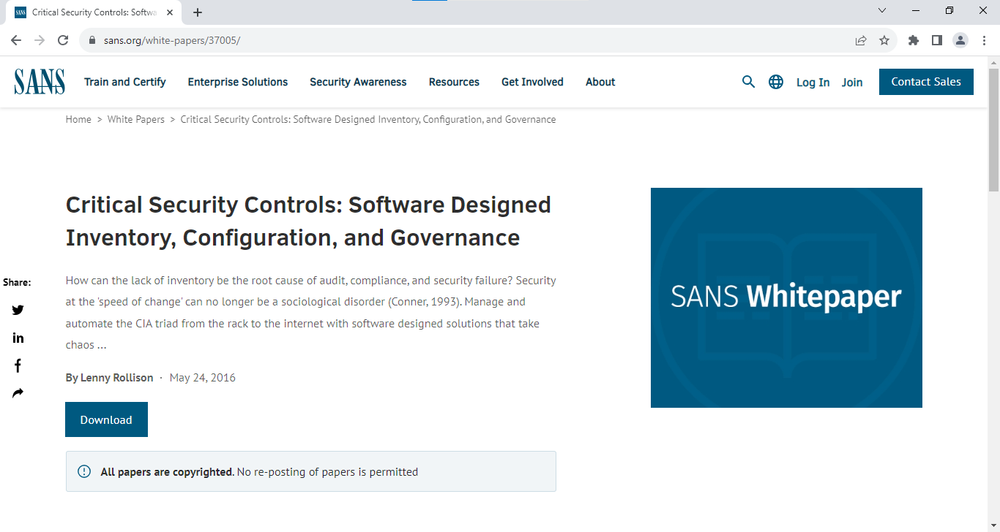
I explored the SANS Information Security White Papers repository to review current security research:
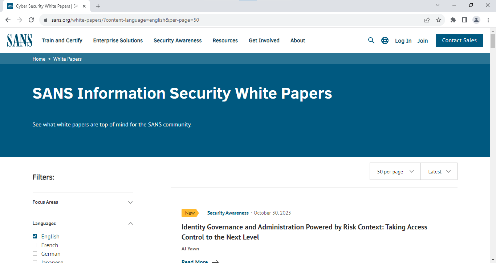
I examined and customized security policy templates to understand organizational security documentation:
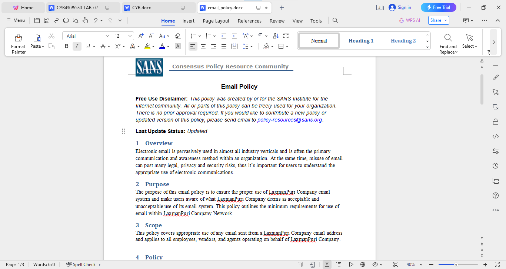
Outcome: I gained practical experience with security policy frameworks and learned how organizations standardize security practices.
I researched Untangle, an open-source network security and monitoring solution, to understand enterprise security infrastructure:
Case Study Analysis:
Introduction to Untangle Platform:
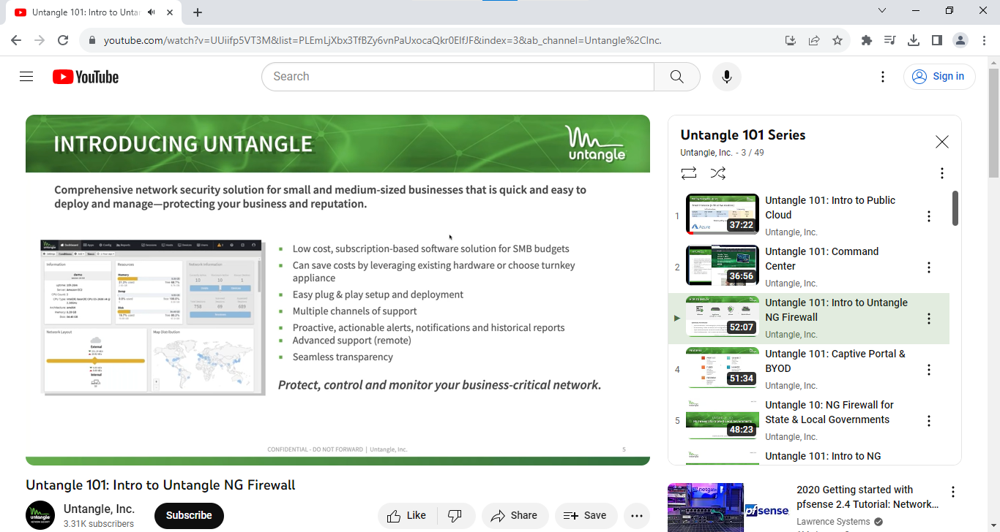
BYOD Management & Captive Portal:
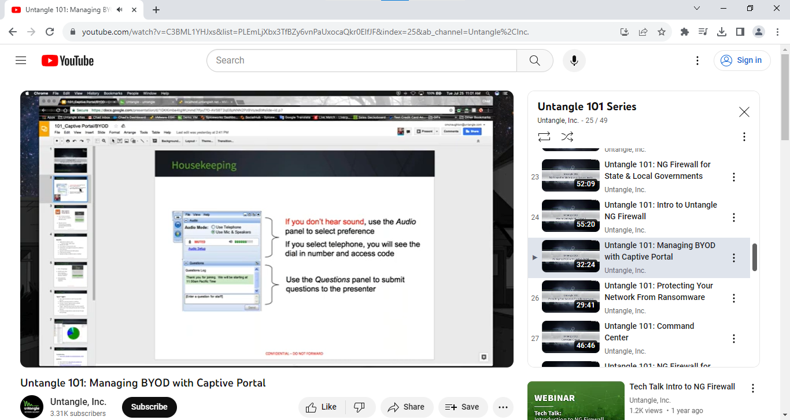
Through this project, I demonstrated how comprehensive an attacker's reconnaissance can be using publicly available tools and legitimate domain queries. The combination of WHOIS lookups, DNS enumeration, and network scanning creates a complete organizational profile before any exploitation attempts.
| Tool | Purpose | Key Function |
|---|---|---|
| whois | Domain registration lookup | Gather registrar and registrant information |
| dig | DNS query tool | Enumerate nameservers and perform zone transfers |
| traceroute | Network path analysis | Map network hops to target |
| nmap | Network reconnaissance | Discover active hosts and scan networks |
| Untangle | Network monitoring | Monitor and filter network traffic |
This project provided hands-on experience with the reconnaissance and footprinting phase of security assessments. I demonstrated the practical techniques used to gather intelligence about target systems, understand their infrastructure, and identify potential vulnerabilities. The exercise reinforced the critical importance of implementing defensive measures to detect and prevent reconnaissance activities before they lead to exploitation attempts.